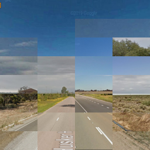
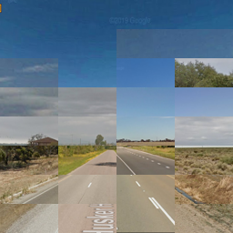
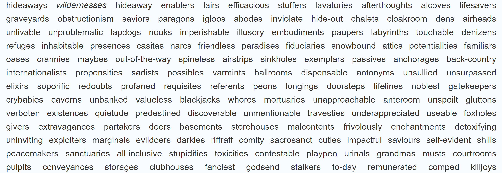
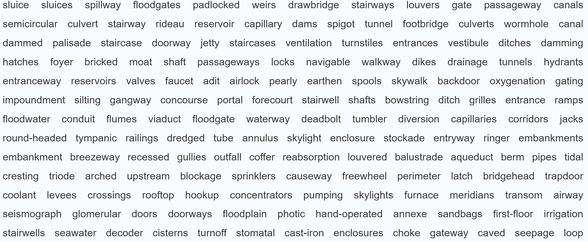
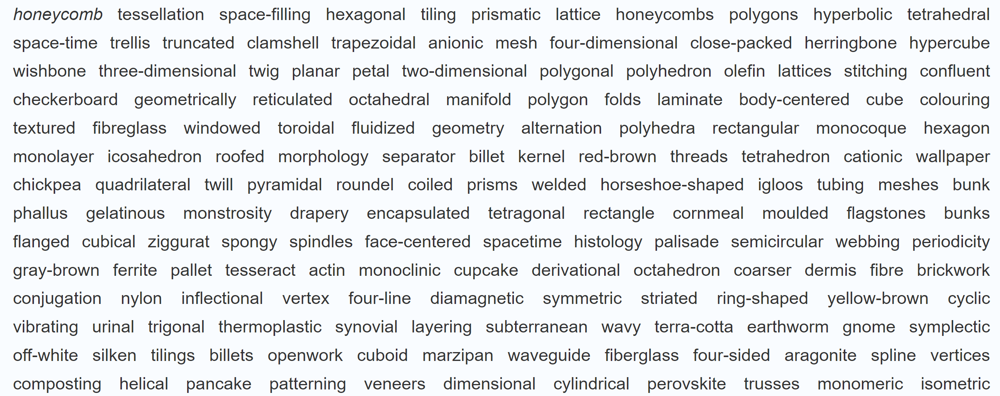
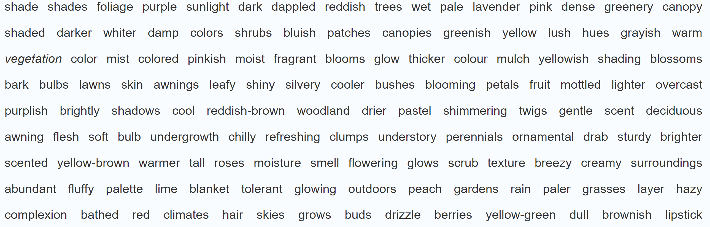
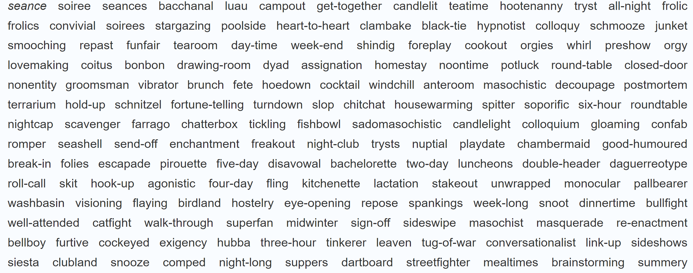
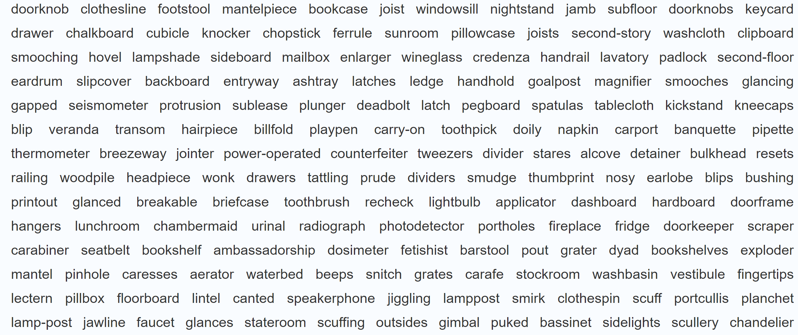
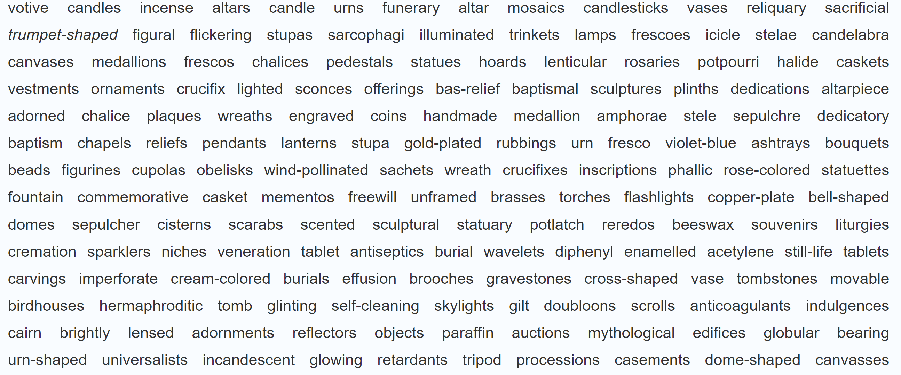
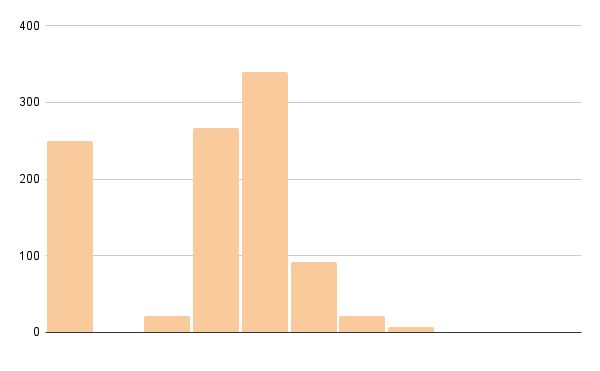

eric's blog ⣪
Eric Xia is a freshman at Brown University interested in the recently possible. He is currently developing a text-based sport known as word golfing, which uses word vectors to model semantic shifts within the english language.
How I work
My preferred way to work is to always multitask. However, I try to choose my activities carefully and always work on just two complementary tasks. The fulfillment from completing an easier task bootstraps the harder one.
freebies
- preferred clothing items available, dressing appropriately
- putting in contact lens, brushing teeth
- charged phone and airpods
- filled water bottles
- listening to high tempo & familiar music
- cold shower with conditioner
- hot coffee or bangs
- waking up before 6:00 am
- working outside of room
- convenient breakfast (rxbar + banana, cucumber bagel, or IHOP)
- working outside of the house
- clean room, laundry done
easy symbiotic pairs
These activity pairs, combining an easy and medium activity, are great for easing into the day because they alternate a short feedback loop with a medium feedback loop.
- short sets of pushups + calculation or memorization work (calculus, math)
- listening to NPR + making deliveries for doordash
- listening to music[^1] + going to the gym
- listening to music + going on a run
- discovering new music + cleaning room
- discovering new music + cleaning accessories, small repair activities
hard symbiotic pairs
These pairs are best done when in the zone because at least one of them require a longer feedback loop.
- taking careful notes + reading and understanding theory [^2]
- writing a blog update + making creative decisions for word golf
- implementing code for word golf + learning new quantitative topics
- calculation work + learning new quantitative topics
- drafting obsidian notes + editing obsidian notes for publication
[^1]: While it it may seem strange to list listening to music as an independent activity, the way the brain processes music leads to the same work/reward loop as anything else. [^2]: I view many activities to be two smaller, symbiotic activities in disguise.
August 18th 2021 CE
I think that adjectives are worth keeping. Parts of speech: noun, pronoun, adjective, determiner, verb, adverb, preposition, conjunction, and interjection. Keep nouns, adjectives, verbs? I think that could work.
Ok all_nouns is way too slow to search for and times out too frequently. I'll have to fix this tonight.
Moving fast and breaking things. Word golfing is now restricted to just nouns, as tagged by nlkt/ wordnet. This brings the total space from 470k to 80k words, and greatly improves legibility at the cost of diversity.
I want to find an easy side project for the rest of the summer to counterbalance my creative work. I'm packed for college already, I have a couple of meetings lined up -- looking for a short research rabbit hole, book review etc.. I could spend more time on learning chinese characters. But in terms of what's useful + pertinent I should just be reviewing math. The downside of that is that it isn't easy. Maybe I'll watch math youtube videos.
Ok, committment is to find some easy math to do.
August 16th 2021 CE
Principle: the player should never, ever get lost and quit out of frustration. Curve ramp is next to implement.
So insane. eight lines of python "in" to remove verbs adverbs adjectives and whatnot and it works amazingly well.
Ok, it is 6 in the morning. Time to sleep.
Just found out that I accidentally added a space to one of my filenames, which apparently gets handled on localhost but not by the server/ elastic beanstalk. So much fun and excitement this was.
This is working beautifully. I've fixed every problem I had below.
OH MY GOD!!
There's a reason why using rigged prompt sets is so good, and its because when you curve towards a nearby target it's an additional filter pass for strange neighbors of the original word. This means for rigged targets, the curve is able to solidify the original aesthetic while simultaneously pointing towards the target.
August 15th 2021 CE
There's a lot of things to do... but there aren't really any things to do.
I've finished my placement, and I've decided tentatively what courses I want to take first semester: CS, computational molecular bio, linalg, and my first year seminar.
As always there's a bunch of things that I want to understand: macroeconomics, chinese characters, multivariable calc. I think I'm starting to get the hang of photoshop. And of course there's a ton of experiments to do for word golf. But I shouldn't approach these things like a sprint in these last few days -- I'll have a lot more time to learn & to build. I'll just try to keep up some steady progress, some momentum going into the school year.
Just off the top of my head, what needs to be done for word golf: build in a historical tree structure (not sure if this is even the right thing), build a front page with themed sets, prototype themed sets. There are several offshoot projects that I have not even gotten the chance to think through fully: little alchemy, a poetic word generator based on neighbor word topography, and the potential for (linguistic, psychological, communication) research tools based on full 200/400 word lists.
I'm experimenting with displaying 90 curved words down to 7 curved words, which is much more parseable but less beautiful. I guess when you move from word to word the neighbors still form a shifting window into wordspace, which is marginally cool but not crazy enough. Balancing beauty and speed -- how do we approach that problem?
Thought: what if worse neighbors disappear as time goes on? That seems effective for maintaining skill gap and speed -- but the issue is still that a single word's location is aesthetically tied to the current word and not the target, so the homing effect is disorienting. The idea of movement is itself somewhat unnatural.
A previously considered possibility: discard the target word, simply have the user navigate through a curve set up against random wordspace.
What about a kind of pruning, where the user clicks to discard words which are not neighbors? That could be interesting, where the aesthetic effect increases with the players work. But that would make for a confusing mess to begin with... but aybe not more than the current confusion at the unrelatenedness of the start word. Yet its also not natural to search for unrelated words.
Or inspired by alchemy, where a word is presented and you need to find the two words which will produce it when combined semantically. That might come down to just locating neighbor words, however.
Feeling right now that the current vision for a golf sport is well defined, but golf isn't good enough.
Then again, maybe it is. There are too many failed paths -- this can be solved by rigged prompt sets e.g. curated prompts sets drawn exclusively from 2/3 step linked neighbors, and tightening the curve when the user strays too far away. The words are not close enough or strangely linked: this can be solved with better data (in particular, excluding newspapers) and lowering the pool amount. Smaller pool = harder but more coherent. So I think small pool + rigged custom prompts could be the right way to go. I have not made any attempt at rigged prompts yet, I need to test that out because it could be a game changer. It is always good to keep in mind: diversity kills intent like a firehose to a flowerbed.
I have a lot of experiments to do :)
August 13th 2021 CE
Labeling this as a sport is inaccurate. Capturing quick mental flights does not need to be in the context of sports, and the golf label is not easily understood. Unnecessary complexity. Going back to game means too much like Monument Valley, e.g. meditative. What do you call a new way to interact with language? An interface? media/medium? Something intricate and curious. Maybe I do need to invent a word here.
Here's the vision:
- word golf is beautiful when it deals with highly specific words that capture a range of well-directed and evocative concepts. See below: hideaways, sluice, shade, seance, doorknob, votive. This problem of finding expressive words is exactly analogous to writing poetry. You cannot say something is "mystical" or "awe-inspiring" because adjectives are easily dulled by their use in a million of boring contexts. You have to dig deeper into the public psyche.
- Attention is our scarcest resource and everyone hates computational poetry. "Freeplay mode" should be killed immediately. Instead, move towards releasing small sets of curated words. Incidentally, this solves the weak motivation for competition problem.
- The main page has to be absolutely perfect. Tile display like this and great posters. Some word sets are free, others require an account.
- The word sets have to be absolutely perfect.
August 12th 2021 CE
still obsessed with these results:
hideaways  sluice  honeycomb  shade  seance  doorknob  votive if you can read this text, you are too close
This concept (seen on the back of a truck on the highway) has a few different versions. You could imagine a memetic in a language, perhaps on a dead alien planet: "if you can decipher this text you are doomed". Probably already a SF staple but we'll see.
primacy in images
Consider the range of images created in an attempt to express a primal message, from childhood scribbles to photorealistic renders of elaborate scenes. Neither the scribbles nor render approximates real life in their construction (the scribbles don't try to). Both are products which cannot be reused, which cannot penetrate any more than simply by viewing them. There is no practice in visual art which can achieve immortality: a monk spending their entire life illuminating a manuscript does no worse than a professional artist or animator today. If you can see the primal vision within a scribble as well as you can of a Pixar movie there is no difference in their effectiveness.
The nature of the scribble is more earnestly primal, attempting to convey a truth which has not been exposed to the brittling effect of reality. Reality makes images more brittle because while it provides a medium for communication, those images never approach reality itself, due to their expressed purpose as images. Forced to choose between an idea and the impossible task of communicating it, an image will trade its primacy for a communicable approximation.
But actually this is not really true. Although it cannot convey its original message to an onlooker a scribble can still convey an abstract idea of itself. It can convey a communicable message of a primal message. In the failure of another person's earnest attempt to draw something exactly the way they see it, it is possible to glimpse your own attempt.
In contrast, a photorealistic render can convey a communicable message primally, in the sense that if you did somehow think the message on screen it would appear to be that exact same primal message. Inevitably, we don't. But it is an approximation of primacy in a different sense than the scribble.
These two extremes provide a justification for all kinds of visual expression, from the painstakingly inefficient to extreme facility. As long as something is made with an authentic vision, it can convey a message that means something to someone.
August 8th 2021 CE
Using zipf_frequency to sort prompts into different classes: 1.8 to 2.8, 2.8 to 3.2, 3.2 to 3.5, 3.5 to 3.65, 3.65 to 3.8, 3.8 to 4, 4 to 4.2, 4.2 to 4.5, 4.5 to 7 (base-10 log scale of occurrences per billion words, so 3 is once per million) The default is now drawing from a nice midrange of 3.5 to 3.65, which is 410 words long.
Here's a sample from 3.5-3.65: columnist postage lantern insurer destroyer staircase safeguard browse asbestos emblem
Here's a sample from 1.8-2.8: despondency vulgarity operandi cuticle marionette inhabitant parishioner puller insolence undergrowth fecundity
And here's a sample from 4.2-4.5: lieutenant tennis copper tiger pub threatened laptop detective database currency
These filters are currently being applied to a list of 7,000 english nouns from Universal Dependencies. I might look for a larger dataset later.
August 6th 2021 CE
locally optimized play in wordspace
Got around to building a testing engine which golfs perfectly locally, in that it will always choose the word rated with the highest similarity score to the target. The results show about 1 out of 5 runs have no reasonable path, and that most optimal runs are between 3 to 6 steps. The quality of the associations made is surprisingly good.
We can see that 3 and 4 step runs dominate, with a few easy 2 step runs and hard 5 step runs. The maximum number of steps necessary is still just 7! Six degrees of separation holds for english words with 200 connections each.
Logs follow:
run completed as: ['jaguar', 'automobile']
run completed as: ['king', 'wrote', 'newspaper']
run completed as: ['pendulum', 'paddle', 'boat']
run completed as: ['crescent', 'large', 'supply', 'equipment']
no path under 100 steps
run completed as: ['piano', 'organ', 'cell']
run completed as: ['panel', 'presentation', 'audience']
run completed as: ['floor', 'mezzanine', 'spillway', 'armature', 'capacitor']
run completed as: ['student', 'leadership', 'intelligence']
run completed as: ['skull', 'slab', 'obelisk']
no path under 100 steps
no path under 100 steps
run completed as: ['animal', 'example', 'intended', 'drive']
run completed as: ['quartz', 'optical', 'cellular', 'telephone']
run completed as: ['investigation', 'board', 'faculty', 'student']
run completed as: ['blacksmith', 'factory', 'facility', 'prison']
...
August 5th 2021 CE
Will be busy with personal things today but I will get some time this week to really dive into the backend & maybe move off of Elastic Beanstalk. ++ in preparation for my first year seminar -- ANTH0066J - So You Want to Change the World -- I want to learn a bit more about economics, and finish Energy by Richard Rhodes.
Every time I read about Facebook I wonder why its relevant and then remember facebook owns Instagram.
TIL:
- Xi Jinping is devoted to peak carbon emissions in 2030 and then zero in 2060. Lots of solar and wind farms being built. Economist says low public awareness of climate change in relation to natural disasters
- China & US minister of defense (?) met recently because China is digging a series of holes for constructing more IBM silos. According to NPR this could be aggression, a need for superpower validation, or preparation for negotiation. The US still has way more.
TIL public infrastructure in America:
- Transit construction projects in the US can be on the scale of a 0.5 million dollars per meter, or 500-900 million per mile. This is the 6th most expensive in the world -- and we don't even attempt difficult tunnel projects! Many new transit projects in the US have to build the boring machines they need first.
- As in housing, there is no silver bullet in reducing construction costs
- NPR interviewee doesn't think the reason is excessive environmental regulation, but it is a problem with a lack of strong central government -- CP substack seems to agree.
-
So, to summarize: We see almost no relationship between labor OR material costs, and construction costs for residential construction, outside of whether you’re in a western country or not. The US does particularly well at building homes, apartments, and other projects that have low administrative overhead or government involvement. The US does particularly poorly at projects with a high degree of administrative burden, government oversight, or where the government is a major stakeholder. European countries do far better by comparison. There’s little evidence that US homes are built to worse standards than in comparable countries. For residential construction, there’s little evidence that other countries have substantially more efficient construction methods that the US should adopt. In the US, low construction costs translate to low property prices, making the US an outlier in housing affordability on a unit-area metric.
- Construction Physics Substack: Construction labor bears no relation to total costs. There are only really two groups, undeveloped countries and developed countries.
- HN on Construction Physics' why we still don't have robotic bricklayers:
- (your washing machine is a robot)
If you build a robot that only handles the main workflow and can't handle any of the exceptions, you're not automating anything; you're building a convenience tool. Basically, you're removing some of the labor part of the job, but still keeping the decision making part of the job for humans. This is both economically unviable and largely unpopular. You're not reducing labor costs by much, because you still need humans around. And workers lose control over their job, and have to "work around" the robot's limitations. Instead of being freed up to do more work, they become babysitters of machines that they have to oversee so it doesn't mess up everything. This is why partial robotic systems don't really exist; either it's a nifty tool that speeds up a small repeatable process of your work, or it's building the entire house.
golfing todos for the next month
- implementing multiplayer with Flask-SocketIO
- with an account you can generate a link, which takes you to a timed challenge
- each player can see the words that the other player(s) is on.
- chat optional
- global leaderboards. Not as important with good party multiplayer
- custom courses (word collections). Not as important with curves
Once account-required multiplayer is implemented, I think I'm ready to launch.
August 4th 2021 CE
A note for later: finding difficult words should be easy with an automated run of the hacked version. Just prefire for potential targets and see if it reaches it within 100 runs -- if not, then there is a rift in the local geography. For example, I just tried to get to "ring" but even using the closest neighbor every time traps you between "belts" and "rings".
I know what to do next.
Right now the biggest challenge is that you can wander off course and get completely lost. I can do one of two things: first, implement a safety net ("It looks like you've wandered too far off course, would you like to be taken back?"). However, what is really getting me excited is the second idea. I've been playing with a hacked version, which sorts wordspace by how close they are to the target word. This makes the first link always the best one. Now, instead of simply presenting the closest neighbors of a word, we can present a randomized selection from a curve: one from the top 3 closest to the target, five from the top 10 closest to the target, 30 from the top 50, etc. This will make the game much faster, and hopefully highlight the skill differentiator in a better way than before. Now you don't really need to worry about getting closer to the target with each stroke -- but you want to get there as fast as possible. And some of the options will be much, much better than others. For example homonyms are freakishly good. They're like portals. They let you to wormhole across wordspace, go from a part like fish to a part like musical instruments.
I just realized that I haven't actually installed Elastic Beanstalk on my new computer, which, from past experience, means it will take at least a day to build again. Also apparently my version is getting deprecated? Sigh.
Here's another good example of optimal play. Starting from fish and going to clarinet is a difficult run, rated 8.6 on the similarity-log scale. But by making use of a homonym along the way, it can be done in just 6.2 seconds and 3 jumps.
Go from fish to clarinet 8.6
trout 0.0s
bass 1.3s
clarinet 6.2s
Way to go! You reached clarinet in 6.2s and 3 jumps.
New round in 3,2,1...
I finally played flexbox froggy today. It's great!
Online dictionaries
Update: I feel stupid, just search github english words and you can find a bunch. I already did this a while back, not sure why I didn't implement spellchecking then. I think this is the best one with 479k words and 5k stars.
It's surprisingly hard to find online dictionaries for determining whether or not something is a valid english word. SCOWL seems like the best thing I could find -- it's upstream of pyenchant which they don't seem to mention anywhere except a single github thread.
http://wordlist.aspell.net/August 3rd 2021 CE
The site has been reverted to its original state, prioritizing the blog above the visualization (which you can find on the right side!). However, the workflow is still much improved with editing in VSCODE and pushing changes to a git repo. The tradeoff is that I lose AWStats, the benefit is that I don't actually have to pay for hostgator anymore.
June 12th 2021 CE
So much done today!
Spent the morning getting timestamps working, using a helper utility to scrape git last modified dates for each markdown file. That way when the files are built on the server the date is the correct one.
Along with some vital UI upgrades I got a skeleton 3D canvas set up within Next.js with three-react/fiber https://elegant-minsky-b916c9.netlify.app
I also finally got around to setting up an SSH key for github, so now I can push changes live really quick.
Spent the evening on word.golf
now there are routes for every english word! Try word.golf/staircase or word.golf/mango
After some deliberation I removed the timer from the main interface. It's distracting and prevents people from exploring. Might reintroduce it for specific modes though.
I also implemented copy to clipboard, connected git to github, and fit more words.
June 10th 2021 CE
I graduated high school today, which should warrant at least a medium amount of self reflection.
First off -- I'm experiencing an increasing amount of friction with the tools I use. This includes
- Most annoyingly the "f" and backspace key caps on my keyboard have flaked off. This has resulted in an unnecessary rewiring of those key locations in my mind so that I can hit them right on the nub.
My Obsidian vault, which has gradually devolved from a well kept garden of school notes to a zoo of different sized thoughts. I will need to go back and categorize my writing and reflections more carefully.
- I wanted to find a way to immediately publish notes from my vault. Should I pay for Obsidian Publish? ($8/month, $96/ year which is a large expense but not impossible to get).
- The thing is, I don't even use a lot of markdown features. I just want links, lists, and headings to persist. to be honest I've gradually stopped using links due to site display prio. RIP zettlekasten
My computer is running out of space and frequently overheats or fails to charge.
- My site has gone from a list of projects to an unstable scatter of clickable things and a huge one-page blog. Editing this blog.html file is becoming more and more unsustainable.
- How to solve this?
- reimagine the main page to automate pushing objects to a scrollable display without three.js. This scrollable display can be done with css/ tachyons, although to be honest it's not that interesting.
- How do I present primarily visual projects aside primarily textual projects in an engaging way?
- The current approach of just taking screenshots of bits of text to paste onto the three.js canvas is terrible. I need to find a way to automate this. I'm reluctant to use / adapt an existing static site generator: maybe I can build one? This is a fun side programming project that would result in a unique sort of website.
- How to present my interests/ organize knowledge efffectively
- What ARE my interests anyways
- How to present my interests/ organize knowledge efffectively
- when in doubt, simplify. there are two essential projects for thought-sanity:
- Clean Up Day: spend a few hours cleaning up the obsidian vault. This involves elaborating on past thoughts and getting more recent thoughts in so it isn't all super outdated notes on linear algebra. - Using markdowntohtml.com generator works FINE. That isn't actually the real problem. The real problem is the size of the blog.html file and its disjunction from the main navigation. I have a good idea for what my new site should look like actually. Explorer, sparse retrofuturistic details. Keep the omnidirectional navigation. Create groups to display. Ditch the three.js - This is a ton of work though
Notes to publish / write/ Books to ReAd: Reason and Violence (a condensed summary of jean-paul sartre's writing), thoughts on Camus's the Fall, ...
And then we have our word.golf project. I'm going to be pretty busy.
I have never found someone my age doing something more interesting, to me, than the things I work on. Although I'm not comfortable being artist-first, or anything adjacent to "indie game developer", I still have what might be considered a fundamental delusion: my own creative interests lie ready to be picked up by the general public.
But why not -- it's exciting enough!
June 7th 2021 CE
yeah it was. word.golf
I'm really stupid and decided to spontaneously delete a config file a few days ago. I think that was the problem?
First day of summer. I'm burning it all down and starting over
June 5nd 2021 CE
Something is very, very wrong. I'll have to migrate off of Elastic Beanstalk. Sigh.
June 3nd 2021 CE
Fishing at Rusty Lake :)


June 2nd 2021 CE
switched load balancer so http://www.word.golf/ redirects to https now.
Still can't connect to the EC2 through SSH
May 31th 2021 CE
soon to come: word vector based little alchemy, starting from water, earth, wind, and fire
tidal and dark create sea
tidal and light create water
tidal and gas create water
tidal and fog create winds
tidal and wave create massive
tidal and weather create storms
tidal and oil create water
tidal and air create water
tidal and storm create winds
tidal and earth create ocean
tidal and dry create water
tidal and conditions create water
tidal and flow create stream
tidal and massive create wave
tidal and hard create wind
tidal and ocean create sea
tidal and electricity create water
tidal and winds create storm
tidal and salt create water
tidal and water create drainage
rain and wind create waves
rain and impact create caused
rain and waters create water
rain and soil create moisture
rain and warm create chilly
rain and night create morning
rain and cold create warm
rain and temperature create humidity
rain and explosions create fires
rain and atmosphere create warm
rain and seen create day
rain and heavy create light
rain and fresh create hot
rain and caused create flooding
rain and seas create winds
rain and fire create night
rain and tide create waves
rain and immediately create days
rain and dark create light
rain and light create heavy
rain and gas create water
rain and fog create clouds
rain and wave create wind
rain and weather create conditions
rain and oil create water
rain and air create light
rain and storm create hurricane
rain and earth create dust
rain and dry create wet
rain and conditions create weather
rain and flow create water
rain and massive create caused
rain and hard create rough
rain and ocean create waves
rain and electricity create water
rain and winds create gusts
rain and salt create water
rain and water create dry
wind and impact create effect
wind and waters create ocean
wind and soil create surface
wind and warm create cool
wind and night create coming
wind and cold create dry
wind and temperature create humidity
wind and explosions create waves
wind and atmosphere create climate
wind and seen create much
wind and heavy create rain
wind and fresh create enough
wind and caused create damage
wind and seas create ocean
wind and fire create heavy
wind and tide create waves
wind and immediately create turn
wind and dark create light
wind and light create heavy
wind and gas create electricity
wind and fog create rain
wind and wave create caused
wind and weather create conditions
wind and oil create water
wind and air create light
wind and storm create hurricane
wind and earth create surface
wind and dry create cold
wind and conditions create weather
wind and flow create stream
wind and massive create huge
wind and hard create enough
wind and ocean create seas
wind and electricity create generating
wind and winds create gusts
wind and salt create water
wind and water create dry
impact and waters create far
impact and soil create result
impact and warm create strong
impact and night create coming
impact and cold create especially
impact and temperature create increases
impact and explosions create caused
impact and atmosphere create much
impact and seen create indeed
May 31th 2021 CE
7:03 am got a SSL certificate

4:41 am: it's getting light outside
Over the moon rn


May 29th 2021 CE

features todo:
SAVING RUNS (to SQLite)
- [ ] get login recognition on index page, e.g. "hello Eric!"
- [ ] indicate run completion in localstorage
- [ ] if logged in and run completed, save the localstorage wordArray to sqlite
- [ ] clear localstorage after run exited and saved in sqlite
- [ ] get sqlite data on profile page
- [ ] display words per run
- [ ] display average words per run
HTML POSTING
- [ ] return error page for no input to the form (which should never happen)
- [ ] Hide the form
- [ ] create a SEPARATE page for lookup with the form
MISC
- [ ] experiment with main UI. It's not cohesive right now.
- [ ] experiment with timing. steal from geoguessr
- [ ] consider edge cases with page back and refresh
May 29th 2021 CE
Another nice chunk of progress made on word.golf tonight. Now stores a "history item" in LocalStorage which has target_word and wordArray properties.
I've also switched from Jinja-based logic to javascript logic; the buttons are now dynamically generated. The side effect of this is that the data passed from python is now in the form of JSON.
Next steps: Completion logic (total time, ↻start again which gets a new target_word). Display words and time as user strings them together, and store time in a timeArray.
This is like 1923821 times more fun than the original idea lol
May 28th 2021 CE
Heroes by Franco Bifo Berardi attempts to connect the Internet, nationalist movements, and mass murderers like James Holmes vis a vis Joker. It has promising lines of thought but is ultimately far too academic. The words are muddled ("financial capitalism" and "fractalized time") and the book lacks a real unifying theme. There is something very important here though to be explored between social spectacle & violent rage.
A compelling claim: the promise of blockchain, more specifically Ethereum, is really in game theory. It allows for the creation of trustworthy contracts which can turn noncooperative games into cooperative ones. https://medium.com/@virgilgr/ethereum-is-game-changing-technology-literally-d67e01a01cf8
May 24th 2021 CE
things I have committed myself to this summer
- Spend a week reading an economics textbook THOROUGHLY in monastic solitude. End with basic understanding of economics and set of notes
- Spend two full days doing Physics C mechanics problems. End with assessments, redemption (or not).
- Spend two full days doing Physics E&M problems. Assessments as above.
- Spend one full day reviewing calc, trig, and algebra.
This is the more fun option compared to taking summer classes. One single push > inconsistent routine
Speedran Asian American Studies paper. Main theme: asian americanness not as cultural identity but existential license. I have no historical image and I'm not about to go looking for one.
May 23th 2021 CE
messing around with the word embeddings and this is so much better than anything I originally planned. No list no game no psychobureacratic dictionary--
nighttime
daytime night-time predawn daylight nightly 24-hour summertime 15-minute curfew 90-minute daylong two-hour 30-minute late-night hourlong routine noontime curfews hour dusk night nights 10-minute 10-hour lull 20-minute dawn pre-dawn rooftop sweeps 12-hour three-hour 45-minute scorching 11-hour day-time four-hour nightime early-morning lunchtime weekday evening hours midnight weeklong prime-time frenzied 40-minute wintry wintertime usual frenetic thunderstorm aerial occasional 18-hour 13-hour 48-hour six-hour temperatures sporadic monthlong citywide weather simulated simultaneous overnight monday-saturday periodic balmy intense intermittent 50-minute evenings 50-day morning frequent filming midsummer raids snowy takeoff searing unscheduled patrols drive-time lights 75-minute duration terrifying hour-long year-round pause moonless observing outdoor chilly rush-hour 8-hour sunset frigid two-week steamy mornings 2-hour air springlike darkness sleepiness 60-minute hectic continuous interrupt bombardments 10-day prolonged weekends humidity directional 22-minute nocturnal sultry ferocious blackout sunrise 20-hour bombardment shipboard autumnal 80-minute three-week summer fasting 25-hour afternoon celebratory interrupted blazing skies noisy unannounced newscasts chaotic half-hour fog relentless frantic taping viewing helicopter respite intensive pre-invasion intensity temperature midday spectacular sweltering fireworks four-day indiscriminate workday week-long rainy shower off-peak rehearsal restful incessant stormy subzero occurrence 17-hour bursts ramadan quiet sight five-hour periods one-hour frequency normal fasts five-day snowstorm mock afternoons on-location observe pre newscast 120-degree brazen nonstop countdown airstrikes weekend round-the-clock 5-minute inclement snowfall violent uninterrupted take-off lighting 25-minute 36-hour four-week during day/night 55-minute matinee ride unseasonal raid shoot lockdown muggy sleep 35-minute surveillance 42-day non-directional eight-day saturation visibility illumination weeknight 12-week broadcasts layover slow-motion days winter gunfire sky climactic islandwide 100-minute 110-degree on-orbit breezy rainstorm 70-minute pregame 15-hour daybreak eight-week blackouts 80-day televised dramatic intervals explosions unrelenting two-day day outbursts glare unscripted conditioning tranquil fiery mid-morning five-week maneuvers midwinter moonlit calm all-night scenes helicopters infrequent drone broadcast 80-degree pyrotechnic holiday rehearsals endless specials 14-hour sudden exercise wave blinding frightful underwater gunship three-day grueling lulls 12-minute feverish sabbath festive braving clock peak cameras
spelunking
sandboarding antiquing sight-seeing backpacking canyoneering parkour scuba-diving rollerblading woodturning abseiling beserk sockless taphonomy summercamp rollerskating bowhunting krump vlogging pasifika nutso massagers bonefishing joyriding antiquarianism franktown intensives coffeepots espalier dhoke witchery h.o.r.d.e. tional person-centered thorbardin anti-de anorthosite witchu sobibór syrtos paleoclimatology rhymin tonalist cuing off-trail freerunning doorstops processual 1910-13 horseriding seigen pfft downunder blackcaps bye-bye nanophotonics helicoptering drumkit whoring odinist sesshin liberationists bird-watching fishtailing kerplunk multi-sensory deep-space okonomiyaki womanizers nagauta skiiing tipplers skydiving couponing dogsledding aruga kremlinology neuroeconomics 75-87 st.-joseph soring tinkertoys wundagore bhimashankar lifecasting nadezda parachuting nettlebed mixed-mode taufa windowblinds anchialine mountain-biking urjukashvili experience-based freeriding go-karting wireshark gambol yamunotri cheapskates mafiosos ecofeminism silvicultural ogof ludus kopet echinoids off-roading 60-0 hillwalking electrostimulation pre-algebra activity-based heathenry daddy-o healthline nebulizers espadrille shugendō peregrination cloggers d?cor shanidar mudflat vanner wildcatting whale-watching philodemus orthodontia mitz scrooges middle-range outerspace terrorvision 102-90 minigolf herey turtling ignatian pabulum nyons perspectival simpletons crusting screwballs trick-or-treating paranoids mixin syro-palestinian hellholes isitingood polarimetry parvenus dimpling plyometric pronghorns neosporin rochestown dodgems faeries single-molecule nincompoops cryptids bushwhacker kite-flying whacko metagenomics teardowns www.tucows.com helmetless trailside pathobiology multicity comping unremembered malacology beasties ethnoreligious mocca blokus stargazing bodyboard sketchers youthbuild horsefeathers self-medication shared-use gangbusters hayseeds perspectivism roadtrips openmoko hide-out standardbreds jale sideris hang-gliding papillote o'donis zwan theyyam gotan frivolities heechee headstands moonwalking uninor crozes astrit tm-sidhi microstock code-breaking cryoablation pylea palaeobiology cross-national psytrance eagleman cardoons gunsmithing middle-level sauntering non-associative metalsmithing clomp sickos rehabilitator handsprings angelology nightclubbing rappelling polysomnography swalwell cesarani glowworm schwingen genoise shortboard refueler adhu berserk tusked odontology pre-engineering 6-28 balgo pirouetting fakhoury zipline singngat hellebores lassos vlei thin-skinned globe-trotting horse-riding self-exile firebug nature-based nonperson incarnational metabolomics spearfishing quondam quickstart puthuppally skedaddle nobelists boupha shoehorning space-age chamfer backrub road-trip jiving crossbody behaviourist speleologist opah barnburner 1900-1950 gebregziabher animality paleobotany intellipedia thalassotherapy artiness figure-of-eight meatheads sneakiness self-cultivation death-defying eiderdown findsen chatterbots pizmonim bee-keeping rollerskate latihan majura
hideaways
inlets bays lagoons estuaries promontories creeks beaches shallows sandbars headlands anchorages fjords jetties peninsulas outcroppings ravines ledges escarpments gullies nooks gulches bayous mudflats swamps shorelines cliffs marshes sandbanks marinas sloughs ridges coastline hillocks waterfalls reefs fringed mangroves marshlands craggy canyons alcoves promenades toolbars boardwalks sidestreets shoreline precipices coasts valleys dunes harbours dotted overhangs fast-flowing shaded unspoiled caverns hilltops basins verandas backwaters eddies watercourses bluffs marshy outcrops porticos vegetated shores sheltered crevices crannies vistas picturesque sunbathers sinkholes causeways riffles footbridges campgrounds interludes bottoms gulfs gazebos fringing hillsides atolls shallow gatehouses riverbank scrubby archipelagoes seabeds cantinas seashore wadis passageways cove verdant landforms lagoon ponds pinnacles hermitages panoramas berms coastlines drop-offs watersheds boulevards portholes tumbledown harbors wharves breakwaters airstrips outcrop redoubts massifs riverbanks courtyards mountainsides slow-moving plateaus archipelagos alleys undulations mountaintops blockhouses roadhouses patios archways whirlpools fascias foyers camotes comoro bungalows oases lush veranda arrayed pratas indented protrusions porches grassy brackish embayments tree-lined pristine drainages coulees buoys fiords seagrass piazzas alleyways sprung foramina stairways entryways verandahs midocean skerries swampy cirques plazas mudflat weirs roadsides habitats mangrove lighthouses manitou zingers ridgelines streams crescent-shaped balconies cays lakes bunkers huatulco staircases tortugas campsites beachfronts shoals rivulets uncrowded rocky windswept vents gravelly floodplains riverbeds intertidal sullivans flats niches beels bodices sandboxes sanibel depressions interspersed fountains atriums maisonettes diked rooftops panata subtexts waterways harmonies shortcuts ledge mineral-rich balustrades crevasses overlooks impoundments low-lying pebbled refuges crags walkways enticements gravels bogs slow-flowing terraces nestled bunkhouses guesthouses springing troughs off-shore creases waterholes secluded fronting wharfs acklins pilasters scows kfarshuba fishable aquifers macaronesian gardiners waterbodies esplanades silences bushland fernandina sunsets dissonances kerguelen smoky subheadings 888-346-9867 mugsy spigots potholed indentations thickets portages chasms mediterranean-type villas south-facing sandy oceanfront tubercles tarpon motorboats caves barrooms marshland cottages islets hinterland blotches ozekis gables tributaries undulating outriggers ditches inlet shrubby buffers sampans backdrops saintes waterslides encampments chalices
aquarela do brazilSome serious procrastination of AP Physics studying:
TODO list
- [x] fix was_correct error
- [x] connect word.golf domain
- [ ] get ssl certificate green lock
- [ ] remove fragments from keys
- [ ] start screen
- [ ] better fake answers: select from median range
- [ ] experiment with progressively harder: fakes get closer to real answers variable time, fixed length modes reward fast choices: 9, 18, 90 hole categories with speed
- word-specific records.
- direction specific records, e.g lerp(word_vec1,word_vec2) for 9 holes
incorrect feedback outcomes should end session, flash red? hmm
- I think it should end because getting it right is fairly easy
- return all words in session
- tree visualization of words
- user can choose starting word tSNE visualization (how? not necessarily useful, overly complicated)
May 20th 2021 CE
Using tachyons.css makes me want to drop everything and just do graphic design

Four runthroughs of the new mechanism. The first word is always taken from a list of 1,000 most common english words. The next word, illustrating the "correct" path, is then a random choice from the 10 nearest neighbors of the last one.
Problems: most noticeably the existence of fragments in the GLOVE vocabulary. To be removed. Also cycling back, and the existence of very similar words e.g. Judge and Judges.
Otherwise it's quite exciting. The idea is that running through something of this length should take maybe 30 seconds max, as the user makes quick instinctive decisions as to which word is more related.

Current idea: choose between closest neighbor and random. Choosing correctly takes you on a walk through word-space.
Today I will begin to sketch out the new interface and test out some core mechanics. The goal is to reduce friction.
May 19th 2021 CE
hmm

May 18th 2021 CE
DEPLOY SUCCESSFUL WOOOOOOOO
http://flask-env-golf-round-55.eba-wedtnwmg.us-west-2.elasticbeanstalk.com/golfNow for a complete UI overhaul and building functionality. It should be a functional interface to a beautiful thing, a legitimate tool for the mind with no aesthetic friction. System defaults + bootstrap e.g. protobowl. Tracking history is not at all important compared to good prompts and features. I most importantly need to prevent people from cheating by entering the same word, plural versions, or "the/and/that/this" which have high averages...
Deployed to EB kinda... but it cannot find the entry point. The grind continues
May 17th 2021 CE
Currently working on hosting app with AWS Elastic Beanstalk. It has been surprisingly smooth so far. I have some kind of requirements.txt error though.Ran around 25 miles yesterday from lynnwood to downtown seattle. I can do maybe 15 miles without serious stopping, the rest was sightseeing. Want to recover quicker / push distance threshold
May 17th 2021 CE links
the qualia research institute is attempting to formulate a mathematical foundation for consciousness
see the intriguingly named "Principia Qualia"
Importantly, the World Happiness Report is based on the Cantril Ladder
May 15th 2021 CE
A trick that really works:
Do one easy task and one hard task at the same time. This way, you balance out any momentary frustration with a known reward simply for existing.
ex: doing homework while waiting for something to bake, writing on long car rides, reading while brushing teeth
you can do this everyday by writing in the margins while reading, or recording your screen as you work. Producing something motivates you no matter what.
May 14th 2021 CE
After 23 successive deployments and 12 hours the app finally got onto heroku (briefly, before crashing out of memory): http://word-golf.herokuapp.com/golf. I need 1gb RAM which is $50/mo. I am going to look into switching to AWS elastic beanstalk. Either way I am glad i will never have to go through this again.
mistakes I made while deploying:
- using backslashes \\ for specifying file path (assume windows specific). forward / worked
- not putting the entry point (wsgi.py) outside of the rest of the application folder. This ends up being necessary because the line ". import routes" in create_app needs to know there exists a parent folder?
- Didn't even have a wsgi.py file for a long time. unfortunately that's the file that actually creates the app.
- specifying the wrong versions of dependencies, and not using a virtual environment from the beginning.
- the Procfile, which specifies the entry point to the app for Heroku, has a really weird format: "web: gunicorn wsgi:app". The variables are on the left side :|
- I kept on setting __init__.py as the entry point, not wsgi.py because it does fine locally with "flask run"
- happily I did not download 6 gb Visual Studio C++ when gensim asked me to. Instead I abandoned my attempt at making a virtual environment
- dotenv, which lets you configure flask with a .env file, wouldn't install so I removed it
- forgot to specify modules in requirements.txt
- didn't have requirements.txt in the root folder
I was so naive.
the MVP is deploying to heroku right now! I have saved the login auth work for when I have more than 0 hours of sleep.
wasted some time making fireworks in p5 which don't even look that good. Got a lot of other stuff done though, including writing copy.
May 13th 2021 CE
Still thinking about this

Coding. I have a MVP and it is so fast. This is so exciting
I also decided to put some effort into an artist statement for the senior show. It comes off as overly angsty & dense but who cares. I am listening to Killing in the Name
Eric's senior year artist statement
I want to close the distance between art and daily life, and the three projects I'm proudest of from this year each try to do this.

The first one visualizes the possible uses for a paperclip. Taking 3,001 responses to a research study that asked its participants how many uses of a paperclip they could think of (Guilford's Alternative Uses Test), I searched a stock icon library and got about 600 unique representations (fishhook, dart, slinky, clothespin...). Collectively, these images are a testament to both human ingenuity and the number of roles a paperclip can take on.
The second is a 37-minute long video of me shoveling a pile of gravel in my backyard. It asks the question: What is the nature of work?
In the knowledge economy of today, work is about ideas. You brainstorm projects, create proof of concepts, propose solutions to problems. These ideas are the products of today's knowledge economy, the proof-of-work for knowledge workers.
Yet our traditional image of work is informed by manual labor. Moving rocks, digging ditches, carting gravel: our mental models for work are based in physical action and incremental progress. It is measurable and quantifiable. By highlighting this video as a creative work, the video frames manual labor as knowledge work. By juxtaposing these two radically different kinds of work, I aim to reduce to absurdity the quantification of creativity in today's knowledge economy.
The third and final project is an existential one. It centers around a single mental image: two Youtube videos playing at the same time, "Lofi hip hop beats to study/relax to" and "15 sorting algorithms in 6 minutes." The resulting sound is chaotic and unsettling.
The lofi music -- interchangeable, forgettable, soothing -- is a coping mechanism, a dream. It is a distraction from the Sisyphean nature of the sorting algorithm.
The sorting algorithm embodies work, chaos brought to order over and over, representing a life' spent in a fast-moving field, perhaps software programming. Databases, applications, interfaces: they create a temporary semblance of order, but to what end? They will be soon replaced, their replacements replaced. All that is left for the worker is the time itself, living in an uneasy truce between the music and the work.
Adding to this theme is a wilderness survival guide, a wall calendar, The Blind Watchmaker by Richard Dawkins, a potted plant, assorted change, a freshly sliced orange, a wallet, car keys, a statistics textbook -- and the Dewey Decimal System, a system for categorizing the entirety of human knowledge into a series of answers to ten questions we don't actually have the answers to, namely:
- How do we organize information?
- Who am I?
- How did I get here?
- Who are the people around me?
- How can I communicate with others?
- How can I explain the world around me?
- How can I control the world around me?
- How can I enjoy my free time?
- What are the stories of our lives?
- What was the world like in the past?
May 12th 2021 CE
Reading/to read- The Sublime Object of Ideology
- Franco Berardi's Heroes
- Jan Tschichold's the New Typography
I've run through maybe 10 hours of Flask/Jinja/SQLAlchemy over the past two days and I think I'm in a good place with my app.
The next steps are:- Finish authentication + login flow (can already register users through API)
- Modify the MVP to list four similar words and user enters fifth. This is the most fun and flowy version I can think of.
- this will get words from the model, take the entry back for grading, and finally return the grade.
- (right now, there is a mess of code that grades three entered words)
- Then push this to heroku
May 8th 2021 CE
painting from today:
And here are some notes from the The Sublime Object of Ideology by Zizek
.May 6th 2021 CE
My senior art installation.
Two videos are playing at once, "lofi hip hop indie beats" and "15 sorting algorithms in six minutes". dissonance/mindless sisyphean progression from chaos to order, and the dreamy, detached use of lofi music as a coping mechanism

thought-terminating cliches
https://en.wikipedia.org/wiki/Thought-terminating_clich%C3%A9
something something grad school something
Notes on Consumer Society, Jean Baudrillard (1970)
More reading notes. From Selected Writings.
the bad part
Baudrillard describes consumerism and the modern grocery store (in a section called "profusion and displays". This part is not good.
He is attempting to criticize the "endless imagery of feast" and the meaningless choice, but in my opinion what he describes are either trivial marketing tricks ("We can observe that objects are never offerred for consumption in an absolute disarray. In certain cases they can mimic disorder to better seduce, but they are always arranged to trace out directive paths.") or genuinely positive things -- its particularly funny when he says that
our markets, our shopping avenues and malls mimic a new-found nature of prodigious fecundity. Those are our Valleys fo Canaan where flows, instad of milk and honey, streams of neon on ketchup and plastic.Baudrillard conveniently omits the fact that supermarkets carry milk and honey. What does he even mean by a stream of neon on ketchup and plastic?
Baudrillard dismisses progressive principles. He says that there is a "fable" of the man who once lived in Scarcity but now lives in the Society of Affluence. However, in economics, "Among all the unknowns of economic science, needs are the most persistently obscure". This hints that consumerism does not fulfill human needs. This is what skeptics see as the consistent failing of [[Enlightenment Now, Steven Pinker]] type books: the [[hedonic treadmill]].
the good part
"The beauty of the surroundings is a precondition for a happy life"
Baudrillard says something which I feel is pretty insightful which is that the all-in-one unity of the shopping mall and the futuristic city (think Northgate mall, or Northline Village, or any ice cream + theater + condos + "market" development) really prioritizes perpetual shopping above all else. This is akin to the casino which opens up a buffet to get gamblers to stay for longer.
The exact aesthetic values of the future which we are raised with are very important. Looking at films like Tomorrowland for guidance, you will find that classic utopian visions have large green open spaces and white organic skyscrapers are at the forefront -- a future which implies reconnecting with our biological nature.
On the other hand, similar & benign-seeming futures advertised on development placards feature the "promenade", the "commons": these place consumers at the panoptic center of attention, the eyes of storefronts and in the eyes of others. If there is nature, it is always subservient to man and subservient to consumption.
Baudrillard: Pleasure is now the citizen's duty. This is the principle of the maximization of existence by the mutliplication of contacts and relations, by the extensive use of signs and objects, and by the systematic exploitation of all the possibilities of pleasure.
Pleasure & desire is equivalent to the traditional Marxist constraint of labor & production. ... [Modern man] will be gently and instantly reminded that he has no right not to be happy.
The puritan morality has warped into the FUN morality, whose imperative is enjoyment and the compelete exploitation of all the possibilities of being thrilled experiencing pleasure, and being gratified.
Baudrillard sees credit as "the systematic socioeconomic indotrination of forced economicizing and an economic calculus for generations of consumers who, in a life of subsistence, would have been unexploitable as a force of consumption.".
Again drawing parallels between traditional marxist theory and consumer theory, Baudrillard claims that the current "indoctrination into systematic and organized consumption is the equivalent and the extension, in the twentieth century, of the great indoctrination of the rural populations into industrial labor, which occurred throughout the nineteenth century."
Calling progressive thinking the "ideology of consumption", Baudrillard derides the idea that some decisive "human revolution" separates the Age of Production from the Age of Consumption. Instead, Production and Consumption are one and the same, aiding the expansion of productive forces worldwide.
Citing a quote from Eisenhower on how the government's role should merely be to encourage consumer spending... Eisenhower implies that consumption, not being directly imposed, could effectively replace taxation as a social levy.
The consumer is consripted and mobilized as a laborer, consumption is social labor, the consumer is the Universal Being at the end of the human species the People are venerated by democracy the same way the Public are venerated by business: given that they do not choose to interfere politically or socially.
thoughts on consumer society
I feel that this section falls flat. The power of consumption, of fulfilling material needs such as buying a new TV or car, is far overemphasized. There is a contradiction in that YOLO-- the pleasure morality, the morality which ostensibly fuels spending on material goods -- actually supports saving. Because saving for retirement, for experiences is so necessary and drilled into the minds of millenials/ gen Zrs, and because people would rather buy TIME with money (anti-work movement, four day work weeks) than material improvement, our consumption is not Baudrillard's.
Instead our consumption seems increasing fueled by cultural affirmation. Lying on the empty floor of an American Room staring into a phone after doing the bare minimum, what we crave is direct validation through affirmation, infinite and instantaneous X-tok subcultural affirmations as opposed to the friction-laden and socially dubious act of material consumption.
The idea of the "niche internet microcelebrity" and creation as consumption supports this same idea, that what Tiktok is good at doing is creating subcultures, the infrastructure for two-way validations in likes and followers. It blurs the gap between creator and consumer more than any other phenomenon to date.
May 3rd 2021 CE
Thinking about this LessWrong post about how dogs are smarter than we think. It looks into the tiktok-famous dog Bunny, who communicates by a button board. She knows her friends by name, understands the time of day, remembers things, is curious about what a "dog" is... It makes a pretty convincing case that we have not seriously explored how much animals can really learn.
More generally the post states that a large amount of fascinating & worthwhile science lies outside of the bounds of traditional academia.
Here are the things going into my installation so far:
- $20 of spare change in pennies and nickels
- The Blind Watchmaker by Richard Dawkins
- Special Forces Survival Guide
- Stills from my gravel project
- My computer playing "15 sorting algorithms in 6 minutes" and "lofi hip hop radio" simultaneously
- Lawn fertilizer
- potted plant
- A wall calendar with an unreasonable amount of highlighting, or possibly a chess game being played on it, or similar grid-abuse
May 2nd 2021 CE
excerpts from the Special Forces Survival Guide
along the same lines as below, two quotes from a wilderness survival book I got when I was eleven:
Shelter is the vital physical barrier between you and a hostile outer world.
A survival diet is about eating everything you need to supply critical energy and nutrition.The idea of being able to eat whatever you want to survive is at odds with society and our natural empathy towards others. See Simone Weil's "sympathetic starvation" and Chris Kraus's Aliens and Anorexia
After joining the French Resistance in London and toiling tirelessly for the cause, she came down with tuberculosis; in a remarkable gesture of solidarity, despite the doctor’s orders to eat heartily, she consumed only what was rationed to her compatriots under the German Occupation. Most scholars believe that this sympathetic starvation was the cause of Weil’s death.
May 1st 2021 CE
Note on "Break up the Ivy League Cartel"
https://mattstoller.substack.com/p/break-up-the-ivy-league-cartel.
BIG is a very well known Substack centered around monopoly power, and they recently had a guest writer write about how the "Ivy League Cartel" threatens American democracy. While it is clear that the selection process at elite universities is flawed, the premise of this article is very wrong.
The exclusivity of the Ivy League is not wrecking the democratization of education, because what differentiates Ivy League schools is not the quality of education.Something that is common knowledge for college applicants is that the quality of education does not differ meaningfully between many schools. The value of elite universities is college experience, connections, and prestige.
This following quote is especially problematic. It implies that the increased selectivity of elite colleges is somehow directly responsible for a decline in the quality of public education:There is no way that I know of to have truly democratic elections without widely available and high-quality public education. As everyone knows, the consolidation of wealth by elite, mostly private, schools has gone hand-in-hand with damaging political campaigns that have weakened even the country’s greatest public universities, such the University of Wisconsin- Madison and the University of California-Berkeley, for example.
the simulation of self-sufficiency in survival fiction is an existential plea
Something not given enough attention is the link between survival literature (boxcart children, my side of the mountain, gary paulsen's hatchet, bear grylls ... chris mccandles?) and the existential/absurd perspective. To kids growing up who the rules of society didn't seem to make sense, survival fiction provides a welcome escape.
This basic human desire for simplicity (which is the same as confronting the existential, which is the same as denial of death) is reflected in either an attempt for RATIONALIZATION (le corbusier desire for legibility aka seeing as a state) or an attempt for IRRATIONALIZATION, fatalistic detachment through an artificial return to wilderness survival. The first is the dismissal of the unexplainable from the world, the second is disassociating the unexplainable from oneself.
Both are pleas for the world to make sense.
Perfectly Ordinary Stones, carried for 1,300 years is a project where six people carry stones and choose a new person to give them to every five years.
The first six carriers are a mayor, buddhist monk, architect, fruit farmer, doctor, and high school student.
The second six carriers are a mayor, buddhist monk, photographer, local official, executive officer, and "association staff member".
This is really sad :(
The ethics of pizza-fueled community service are complicated.
April 30th 2021 CE
(draft)
A response to "Ultimate Meaning: We Don’t Have It, We Can’t Get It, and We Should Be Very, Very Sad" by Rivka Weinberg
View the paper here in the Journal of Controversial Ideas: https://journalofcontroversialideas.org/article/1/1/132
Abstract:
Life is pointless. That’s not okay. I show that. I argue that a point is a valued end and that, as agents, it makes sense for us to want our efforts and enterprises to have a point. Valued ends provide justifying reasons for our acts, efforts, and projects. I further argue that ends lie separate from the acts and enterprises for which they provide a point. Since there can be no end external to one’s entire life since one’s life includes all of one’s ends, leading and living one’s life as a whole cannot have a point. Finally, I argue that since we live our lives and structure our livingahumanlife efforts both in parts and as a whole, it is fitting to be sad to recognize that leading and living a life is pointless. My discussion helps make sense of the literature that frequently talks around this topic but often does so vaguely and indirectly.
The main argument:
We cannot possibly have a point to leading a life because valued ends (points) are external to the projects toward which they are directed.
Some strong arguments, esp. about many abstract/altruistic values as delaying the problem of life having a point. But I don't agree at all because I don't think that "having a point" for life is the same as "having a point" for an action within life.
I think Rivka's response to the category mistake objection is fatally flawed.
This is the category mistake objection:
We might consider asking for the point of life, or being sad that there isn’t one, to be a category mistake, akin to asking, “When is a potato?” or being sad that your baby has a name but not a number, or that your nose is neither odd nor even.
Seeking the “when” of a potato or the oddness or evenness of a nose is incoherent; potatoes and noses are not the kinds of things that have times or oddness/evenness. It is incoherent to demand that of them and nonsensical to bemoan the fact that your nonsensical demands cannot be met. When we ask what the point of life is and are sad to discover that life can’t have a point, are we making a category mistake? Are we nonsensically bemoaning an incoherence?
And this is her defense:
I don’t think so. Leading a human life is an effort or enterprise we all engage in, just as we engage in many other projects within our human lives. It can then come as a disappointing surprise to note that, unlike many other of our purposeful enterprises, leading life itself cannot have a point. Asking whether life is pointless is not incoherent—we understand the question and are capable of sensibly answering it; we just may not like the answer.
The strength of the category mistake objection is that it says, NOT finding a point does not make something pointless. The attribute of having a "point" does not apply to life itself when our idea of what a "point" could constitute is informed entirely by the points of actions within life.
She never answers this.
Because of this category mistake, I think that "the point" for life as a whole is not its effect, as is "the point" for individual actions, but rather the point is to live stories/ have experiences which are timeless. The ends of life as a whole, to the extent that we engage in life as an effort or enterprise of its own (which, again, is not the same way we engage in individual actions), are timeless.
Stepping back a bit, my own view (which I think is fairly conventional) is that closed loops of value make individual actions intrinsically meaningful, and all of life is composed of these individual actions, meaning that living as a whole is meaningful. This objection, akin to dismissing Zeno's Paradox (Rivka is saying how can anything move? Of course things can move!!), is also addressed in a section titled "The Fallacy of Composition". She says:
One might object that seeking a point to living at all is an instance of the fallacy of composition, i.e., of attributing to the whole what is true of the parts. But, as argued, life is an effort or enterprise that we engage in both in parts and as an effort or enterprise of its own. It therefore makes sense for us to want that effort to have a point because it is the valued ends toward which our efforts are directed that serve to help us justify or makes sense of those efforts.
Minor objection to the above: Life itself is not an effort of its own. Every effort within life is an action within it.
However, as far as life itself must be construed to have some kind of overarching aim (and I agree that there is some expectation in this sense, although I still don't think the attribute of "having a point" applies in the same way), the best argument against this that I can think of comes from this quote from Stanislaw Lem's Reflections on the Objects of His Childhood Home: “Each experience has its weight, its authority, which does not admit of argument and depends only on itself.”
The purpose which we extract from our life structure is not due to its effect. It is not causal in the sense of an individual valued end or "point" immediately following it in time. Instead, the value, which Rivka acknowledges as well, comes from what is termed the "narrative trajectory of human life", or what I will term the story which stands independent of time. While a story takes the form of a cause and an effect, the value of the story is akin to aesthetic/experience, and is detached from time. Timeless fairy tales, archetypal/prototypical figures etc.
The reason that our own expectation-fulfillment drive for life-as-story are not the same kind of goal as eating five tomatoes (a fulfillable drive) is because our own experiences are in the frame of our life as a whole. "I want to be the kind of person who goes skydiving before they die" is a continual, life-long drive which will NOT be fulfilled by going skydiving.
One possible objection to this claim I just made, "that the value of the life is in living stories", is that striving to appear a certain way is a fundamentally a social phenomenon. In response, I actually think that this value is mostly convincing yourself that you are a certain kind of person or a figure within another narrative. And that you will be until the day you die.
(With this way of thinking of living stories as having timeless value, I am taking the stance that all of this value is human defined. Without the knowledge of life stories this point for life would not exist, perhaps in a hypothetical Edenic paradise)
This idea of timeless story value also answers the defense against the "Everyday Meaning Objection":
Recall: if I work as a lawyer fighting for civil rights, for example, the point of my efforts is justice, which is part of my Everyday Meaning. But justice cannot serve as the point of leading my life, even if we think of our overall efforts as necessary conditions for my Everyday Meaningful fight for justice, as I will notice by imagining justice achieved,—then what? What is the point of the rest of my life?
The continual drive to be someone who fights for justice is the Universal Meaning behind the Everyday Meaning of justice. And that won't stop. Preserving the story of your life requires constant vigilance.
To summarize: Rivka's whole argument for the pointlessness of life is based on the point being external to the action:
"The point of building a hut, like all points, will lie outside the hut, as we have noted. But there’s nothing external to your life to serve as the point of leading and living it because your life includes your whole damn life."
But there is something external! Externality only involves time (the "after") when the desired state (of your family, of politics, of the world) in question are themselves subject to time. When the objects themselves, stories/experiences, are independent of time, they can be an external valued end in themselves without being subject to time; without coming "after". Life can and does have an external point because the point of life is not causal like individual actions in life.
April 29th 2021 CE
Reading the The Making of the Prince of Persia, by Jordan Mechner, a Yale filmmaker/game designer who made this insanely popular game for the Apple II straight out of college. Thanks Applied Divinity Studies.
A relevant passage:
> This morning I sat in the sun and reread My Side of the Mountain. It got me thinking about how far removed from nature my life is. Staring at a computer screen all day. Fast food, fluorescent lights. I’m only 21; my eyes should be bluish-white, instead they’re bloodshot.How important are books like Hatchet and My Side of the Mountain in formulation of identity? Probably more than is given credit.
> The yen to wander is still in me. It’s not dead. Thanks, Jean George.
April 27th 2021 CE
A riddle:
1:3
2:3
3:5
4:4
What comes next?
Thinking about how satisfying it is to sort X by an unrelated measure Y.
April 26th 2021 CE
Response: Kneeling Bus's "This Must Be the Place"
When I originally read this piece I was impressed by the way it encapsulated my feelings of disenchantment about the relationship of the Internet to the physical world.
In particular, the following quotes stuck out to me. The first is the recognition that suburbia is not a fleeting circumstance to be transcended, but remains the defining aesthetic in America:
If you grow up in the suburbs, a familiar experience is going over to a friend’s house for the first time and recognizing its layout as identical to that of another friend’s house you’ve already visited, if not your own house...This experience of recurrence mirrors other patterns that predominate in suburban (and increasingly, urban) environments: the ready-made familiarity of chain stores and restaurants that you’ve already encountered elsewhere, only distinguished by slight variations, appearing in similar clusters throughout a metropolitan area.The second describes what Kneeling Bus calls "post-spatial space" (a term I personally don't like), and is from Paul Ford's The American Room:
“The people dancing and talking and singing in beige rooms with 8' ceilings are surrounded by standards, physically and online. Technological standards like HTML5 also allow us to view web pages and look at video over the Internet. All of their frolic is bounded by a set of conventions that are essentially invisible yet define our national physical and technological architecture. Their dancing, talking bodies are the only non-standardized things in the videos.Finally, this last quote paints a dystopian vision of the future:
Earlier this month a house in Santa Monica, currently on the market for $5 million, became available to TikTok influencers, who can apply to spend two hours filming amid its pool and amenities as long as they help market the house in their videos.The process by which Airbnb transformed shelter into a liquid commodity might similarly transform content creation sites, which is to say that humans and content will soon have to compete for housing.
Here are several (pretty convincing) defenses of Instagram/Tiktok in response, mostly from my friend Claire Yang:
This hunt for common experience is not a bad thing. Instagrammability results in cute cafes and pink brick walls. Is it really a dystopia when your life resembles a pinterest board?. People use Pinterest as a way to intentionally work towards having their life mimic internet pictures. They explicitly agree to this and enjoy it.
Fashion isn't frozen. Tiktok content creators understand homogenization better than outsiders and strive to avoid it. They are not trapped into anything. Much of internet culture is making fun of basic and outdated attempts to fit in.
Saying that "humans and content will soon have to compete for housing" is hyperbole. The interests of rich influencers have always trumped poorer people, and different types of buildings serve different purposes.
Lastly, caring about something like the American Room is elitist. Beige 8' rooms look rather nice. (the recognition of its existence is good though)
I'm not sure if the author meant to come off as negative (he does seem to strive to be impartial). At any rate, I still really like the article for what it brings attention to.
April 25 2021 CE
Model UN is fun.
April 24th 2021 CE
No profound thoughts, creative energy spent on MUN.
Todo list. None of this is particularly urgent.
- Continue Structure of Scientific Revolutions
- College blog post, maybe
- Finish the Time Theory section of Bullshit Jobs
- Skim the rest of Simulacra and Simulation -- I think I've gotten most of it already
- Refine the synonym game and do boring stuff. Struggling hard with implementing login and leaderboards in Flask.
- At some point I want to optimize the way I display posts on this site. I have an idea of what to do but not how to do it.
- ToC Chapter 3 reading
- Math, Math Review, Integrals
- Chinese HSK Level 2, Spanish, Esperanto. If only...
- Synplifier & similar things. I will not give up.
- *kicks next.js + mongodb project* idk, do something
April 23rd 2021 CE
The Universe is a dream dreamed by a single dreamer where all the dream characters dream too
The Tumblr crowd is not so different from the Hacker News crowd. Both draw people who are intensely fascinated with the texture of life, mostly introverts. Then I think the (usually) male impulse for self-sacrifice causes the two to diverge.I can't help but see engineers, who are predominately male, as aesthetics altruists. They are the only ones who get to build cities, bridges, to set the scene for human life, but always at the curse of knowledge which makes their creations banal for themselves. That is the irony to their idealism: at the end of the promise of the true realization of their dreams they end up having to sacrifice them, no longer able to see anything other than plumbing and shear loads.
In this sense I guess you cannot really make something for yourself. In the process of making you are inevitably drawn into a different, sadder understanding of your creation than the consumer. The architect of the temple can never be the excited visitor whom he designs for. No one wants to do the work, we all want to live in worlds of other peoples' making, for life to happen to us; but without acts of aesthetic altruism, of self-sacrifice, none of it would ever be real.
Richard Wagner saw civilization neutralized by music as lamplight by daylight. In this same way (always) newly acquired adulthood dissolves against childhood dreams.
interesting todolist app concept: every time you skip a todo item it breaks it into two smaller tasks. Prevents tasks from getting stale and connects to atomic habits philosophy.
basically, if you skip a task or fail to complete it by the deadline
it splits into two smaller, easier to tackle tasks
like instead of "do 10 pages of spanish reading" it would then have "do 5 pages" and "do 5 pages"
This look into a present-day "startup society" is fascinating: Prospectus on Próspera. They have a 3,000 page charter document. Tomorrow's exercise in the New State Convention at KINGMUN pales in comparison...
Maybe I should compare the ideal society that we come up with with Próspera. I don't want to take all my ideas from this single source though in committee.
April 22nd 2021 CE
Published my Simulacra and Simulation notes finally (100 pages in). Lots of interesting connections there -- the author is definitely crazy but a very productive kind of crazy. See the book covers newly added, also favorite blogs linked!
April 21st 2021 CE
seek trivial inconveniences
A classic idea from the LessWrong archives is "beware trivial inconveniences". Scott Alexander writes about how formidable the Great Firewall of China had always seemed, and then how surprised he was to find, once he visited, that all it took was twenty minutes to set up an internet proxy to get around it. This seemingly minor inconvenience was all it took to prevent the majority of the population from accessing the rest of the web.The natural corollary of this idea, then, is to seek trivial inconveniences. Solving the easy problems probably get you farther than you think.
75% of internet humor is sarcastic
Interesting note from a while back.https://sci-hub.do/https://ieeexplore.ieee.org/document/7344888
...The majority of the reviewed proposed approaches are not equipped to cater for traditional limitations, such as negation effects or ironic phenomena in text.
: Addresses the automatic detection of sarcasm and irony by introducing an ensemble approach based on Bayesian Model Averaging (BMA), that takes into account several classifiers according to their reliabilities and their marginal probability predictions.
Results show that not all the features are equally able to characterise sarcasm and irony, whereby sarcasm is better characterised by Part-Of-Speech (POS) tags, and ironic statements by pragmatic particles (such as emoticons and emphatic/onomatopoeic expressions, which represent those linguistic elements typically used in social media to convey a particular message).
The authors found out “that a humorous tweet is 76.7% likely to also be sarcastic”, whereas “sarcastic tweets are only 26.2% likely to be humorous”. Future work is required on the connection between sarcasm and humour.
April 20th 2021 CE
Cache Test!
I am enjoying online school immensely. I am 200 pages into David Graeber's best known work and have a MONSTER annotation 5000 words long from it here. Connects so well with Ribbonfarm's Seeing as a State, Time-Discipline theory, and Nietzchean will to power
A few thoughts on one of my senior elective courses at Lakeside, Game Theory and Geopolitics.
Idle thoughts
- flux as model for college applications: skill, luck, volume
- A computer is a medium. Abstraction is not truly realized more through pixels than paper, but we feel like it is. This is due to the fact that digital mediums have greater freedom of manipulation -- Spinoza's idea of substance? Freedom of substance as essential parameter for a "universe". Gets into diversity metrics (hill numbers?) and the "simple visual universes" from earlier
- I'm really interested in the meaning/nature of work. This should be the focus of my senior art show.
- A useful thinking tool: can you imagine a world in which a statement is still true but the ground reality is actually much worse?
April 19th 2021 CE
I realized that the amount of friction involved in making blog posts (selecting an image, uploading etc). even in its current (unoptimized) form should be tiny compared to the amount of time I put into writing the content. So I should write more.
Put up a draft of "high school students and cancer cures", which I hope to update later when I have the motivation to work on some more. A really interesting cultural waymarker.
Books that I read (partway) over spring break:
- Materialism and the Mind/Body Problem // edited by David Rosenthal
- Beyond Good and Evil by Nietzche
some interesting ideas from mind/body problem (don't have the book with me): one strong objection I didn't consider to the identification of mental states with brain events is the lack of spatiality; a mental state is disembodied while a brain event clearly happens in space (e.g. in an MRI scan!). It's not clear to me that mental states are necessarily disembodied -- they can have environmental triggers or necessarily involve 3d space (imagining climbing a tree etc.). There are many strange Identity Theories, which reveal how ambiguous "is" really can be.
I think I trust philosophy significantly more now though. No one is caught up on the semantics of "is". They are simply saying, if we define "is" as this condition is it true? If we define "is" as this other special condition is it still true? As Agnes Callard says
"we never want to hit the point in any conversation where we throw up our hands and say 'isn’t that just a matter of how you use the words'. I think, contra Wittgenstein, that philosophy is what makes it impossible for language to go on holiday."
Working on a "probability quenching" blog post which is related to my college application process.
April 18th 2021 CE
Published some of the notes from Birth of Tragedy and Thus Spoke Zarathustra.
March 30th 2021 CE
Lots of stuff happening.
- TOC problem set 2
- 25% thru HSK list 2
- read 100 pages of reamde by neal stephenson, got bored. The story is interesting (palette drift! simulacrum! seattle!) but excessive setup lost me
- (mostly) read the birth of tragedy, thus spoke zarathustra by nietzche. notes to publish
- to read: virtue ethics
- TOC problem set 2
- doomscroll demo in progress in p5.js
- domain registrated for the lateral thinking project
- gravel pile work has been done
- and of course college
What can be said about college admissions and how can it be done without seeming entitled?
Probability quenching, fake college site, quantitative analogies, evolutionary analogies, agent models, boring boring boring
Must find good project for senior arts show.
March 8th 2021 CE
check out optionality vs. freedom post
March 4th 2021 CE
Sorry about accidentally deleting this page!
Fixed it by copy pasting all of the entries from Updately. Admittedly there were only 6 but thanks Samson!
- 20 pages into Society of the Spectacle for fun
- IEP entries: descartes, slavoj zizek. I'm beginning to prepare for a MUN conference
- 50 pages into Simulacra and Simulation, will hopefully put up nice notes sometime
And now by writing this blog post I'm procrastinating on my Sipser Chapter 2 reading, Duolingo, and Physics homework.
February 20th 2021 CE
Spent all of today/yesterday on the lateral thinking project and got a working version up on heroku.
Nice to get familiar with virtual environments/ git/ flask. Excited to keep developing -- its an interesting niche as accessible interactive NLP. I feel there's potential for a real tool for thinking, not simply an organizational or aesthetic tool. And it's fun and conceptually interesting. Todo is converting the similarity metrics to graphs in JS and adding time limits. And finding additional creative indicators.
February 17th2021 CE
Had a nice midwinter break so far.Finished The Unbearable Lightness of Being by Milan Kundera, 5/5 stars. Go read it
Read The Dispossessed by Ursula Le Guin aka "anti-ayn rand". Liked it a lot, puts forth a very realistic view of nonauthoritarian communism. 4/5 stars
Did Theory of Computation problem set 1
Got a skeleton MongoDB + Next.js integration set up for Synplifier! I have a long way to go but all the data is now imported with database. Now I can really get into rewriting my code in React, hurray
to read: Against Method & Structure of SR still February 12 2021 CE
新年快乐!
did homework
Fixed the three.js navigation some more, added contacts
Read The Atlas of Radical Cartography, a little book of 10 essays. TIL there was quite the extensive mafia trash collection cartel in NYC up until the 1990s.
There was one map/essay which took the idea of the water cycle and made it much more detailed which was very interesting. Apparently, wastewater-to-tap water supply does not exists anywhere in the US. Also, many municipal drains just go to the ocean. Theme is that there's clearly a huge disconnect between the abstract manifestation/knowledge of the water cycle and the actual perceived social meaning-- stemming from the idea that Nature is thought of as abstracted from our actual surroundings.
Finished english essay on technopessimism: It's not anything super new, just a personal perspective. Perhaps the most resonant part for me is artificial creation, or creation-as-consumption. + web dev now vs the internet 1990s, how tiktok convinces everyone that they can become creators rather than consumers, selling that dream. +GravelHacks/ pascal's wager, bayesian probabilities/probability quenching. +easily imaginable situations are given more weight
built up a side project which quantifies lateral creative thinking (aka Alternative Uses Test) through use of word vector representations. Should be relatively quick through Gensim + Flask. Flask is amazing btw
February 7 2021 CE
Today was productive but also quite uninspiring. It was briefly sunny.
Finished reading Topeka School. 4/5 stars, probably the most contemporary book I've read in several months.
Read and took notes on 1.3 in Theory of Computation. There is a ton of formalism -- I'm worried that I tend to regard the wrong things as trivial: just because I took a ton of notes on syntax early on doesn't mean that I'm going to get a better grasp of concepts. But then again maybe that is what I'm usually missing anyways.
Now I know why regular expressions called regular expressions!
I've been recording study /work sessions on OBS and speeding up x16 for fun with ffmpeg, a cool utility which can basically do any kind of file conversion or processing that you need
In a typical case of local self-improvement minima, I tried to set up a python script to automate the ffmpeg command line calls today for a long time, messed around with subprocess and gave up.
Did content work for synplifier (~20 new properties) and fixed CSS stuff. Did not have the energy to go into depth. I wish I could go to college already.
Still haven't looked through mongodb + nextjs integration but plan to soon. Goals for tomorrow: Do the homework
February 6 2021 CE
Finished reading & taking notes to about p. 70 in Theory of Computation. The college application process should be officially over now -- last interview was this week. Applied to a handful of essay-first scholarships in the past two days. Fixed up site a little bit more.
Todos over weekend:
- Homework
- content work for synplifier
- finish ToC chapter 1
February 4 2021 CE
College interview today, another one tomorrow. No progress on anything except homework, but found a cool library for game theory in Julia.
February 1 2021 CE
Last time I said my Next.js blog needed more customization. Then I realized how stupid that sounded considering there was no content on it.
From now on, my Updatelys will go here too: https://www.eric-xia.com/blog
1-31 2021 CE
. The amount of serendipity that will occur in your life, your Luck Surface Area, is directly proportional to the degree to which you do something you're passionate about combined with the total number of people to whom this is effectively communicated.
First update :O don't expect this much every time
I've been thinking about whether to do public updates. At first, I thought they might not be necessary; I've been taking zettlekasten notes for about 8 months now, and found Obsidian frictionless and super fun. And I write blog posts on my website to document major projects. Do I really need more writing?
But Obsidian is not a productivity tool. It's a tool for thinking/deep work/residual connections, and doesn't handle daily activities etc very well. Updately can hold me more accountable, and Samson's points about the advantages of learning in public make sense.
And more to the point, I want to increase my luck surface area, and that involves letting other people know what I'm working on in a super direct way. I'm not dropping music, no need to build up hype. actions
(Synplifier is an open source knowledge base making synthetic biology accessible for everyone.) - published new static site yesterday (https://synplifier.com) with AWS amplify (AWS abstractions very poor) - Plan is going from basic dictionary --> hyperlinks between terminology--> directed force graph --> protocols-as-pathways --> programmatic protocol visualization. But the information there has to be accurate first, of course - Working on full-stack with heroku today, to surprising success. Trying very hard to learn mongoDB and nodejs. No need for react here.
This weekend I also spun up a site for an art piece on the nature of work in the knowledge economy. It's a hackathon where I'm the only participant and the only challenge is to move 10 cubic yards of gravel across a football field.
Read like 2 pages from Sipser's Theory of Computation (for independent study)
went for run
minecraft, homework
scheduled driver's test
thoughts I plan to share interesting links every update: Social networks are proof-of-work mechanisms (Instagram as proof-of-wealth, Strava as proof-of-exertion) Immortality is continuing the "great conversation" (RibbonFarm)
I need a real blog. I built one with Next.js but it needs some more customization. Blog posts in progress:
bayesian probability "quenching" with random number generator
science fiction
an analysis of every high schooler cancer cure claim ever made (good benchmark, and media analysis) Learning chinese, esperanto, spanish on anki/duolingo. Having trouble prioritizing. To read:
Structure of Scientific Revolutions, Thomas S. Kuhn (plan to publish notes). Against Method, Feyerabend (advocate for scientific anarchism, i.e. rejection of authority)